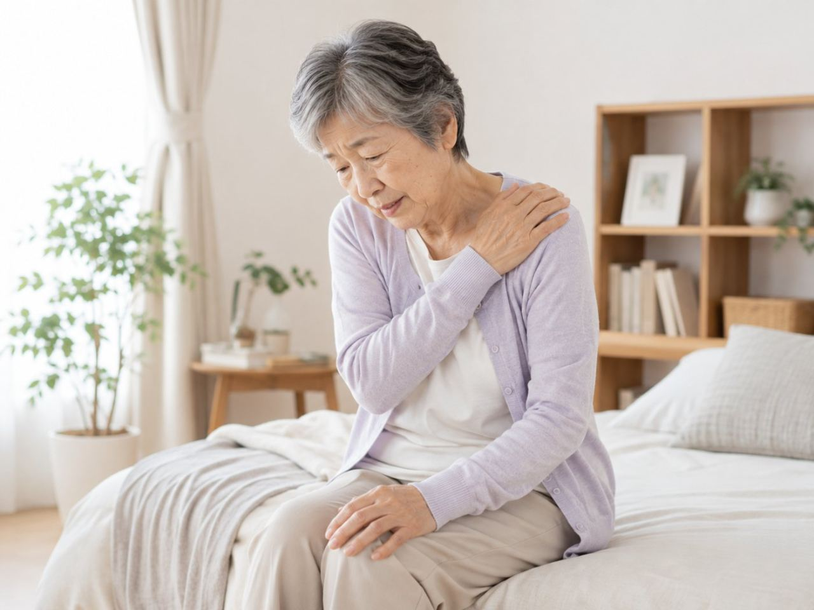

高血圧のある方は、肩や首のこり、頭の重さ、寝つきの悪さ、こわばりなどに悩むことがたびたびあります。訪問鍼灸マッサージは、高血圧そのものを治療するものではありませんが、主治医の管理のもとで、こわばった筋肉をやわらげ、こりや緊張、眠りにくさをほぐして過ごしやすさを支える役割を担えます。国家資格を持つ施術者が、血圧の様子を見ながら力を加減し、無理をしない形でていねいにケアします。医師の同意が得られれば医療保険を使え、1割負担でおよそ395円が1回あたりの目安になります。要介護認定は不要で、介護保険の限度額とは別枠です。血圧は薬と生活習慣で管理するのが基本なので、治療は主治医にゆだね、施術は暮らしを支える役割にとどめます。血圧が高い日は施術を控えるなど、安全を最優先にします。ここでは、できることと気をつける点を整理します。あらわれ方には個人差があります。
まず大事なところから。主治医の管理のもとで、血圧の様子を見ながら無理のない範囲であれば受けられることが多いです。血圧が高い日や体調が悪い日は施術を控える判断もします。まずはご相談ください。
高血圧のある方に多い、体のつらさ
高血圧そのものは自覚症状が出にくい一方で、肩や首のこり、頭の重さ、寝つきの悪さ、体のこわばり、緊張の抜けにくさに悩む方は多くいます。こうしたつらさは、血圧そのものが原因のこともあれば、日々の緊張や運動不足からくることもあります。
訪問鍼灸マッサージは、高血圧を治療するものではありませんが、こりや緊張、眠りにくさを軽くし、少しでも過ごしやすくする役割を担えます。血圧の管理は主治医による薬と生活習慣が基本で、施術はその暮らしを支えるものです。
訪問鍼灸マッサージの役割｜こり・緊張・眠りにくさをほぐす
のびのびの訪問鍼灸マッサージでは、こわばった肩や首、背中の筋肉をやさしくやわらげ、緊張や眠りにくさに、手技やお灸のあたたかさで働きかけます。鍼灸に加えて、関節が固まらないように動かす運動も、体調を見ながら組み合わせます。ねらいは、血圧を下げることではなく、体のこわばりや緊張をやわらげて過ごしやすくすること。
「施術の日はよく眠れる」「肩が軽い」と感じる方もいますが、あらわれ方には個人差があります。強く押しすぎない、心地よさを大切にしたケアを行います。
血圧の様子を見ながら｜高い日は無理をしない
高血圧のある方のケアで大切なのは、血圧の様子を見ながら進めることです。のびのびでは、その日の体調や、可能であれば血圧の値をうかがい、体に合わせて力や時間を加減します。血圧が高い、頭痛や気分の悪さがあるといったときは、施術を軽くしたり、その日は控えたりする判断もします。
急に立ち上がらない、長く同じ姿勢を続けない、といった配慮も行います。安全を最優先に、無理をしないのが基本。薬は主治医の指示どおり続けていただくことが何より大切です。
施術は治療の置きかえではない｜薬と生活習慣が土台
訪問鍼灸マッサージは、血圧の薬や生活習慣の管理に置きかわるものではありません。血圧のコントロールは、主治医による薬と、塩分や運動などの生活習慣が土台です。施術は、その土台のうえで、こりや緊張、眠りにくさといった体のつらさをやわらげる役割です。
「マッサージを受けているから薬をやめてよい」ということはありません。薬は自己判断でやめず、主治医の指示にそって続けてください。施術で気づいた体の変化は、医療につなぐようにします。
主治医との連携｜医療の管理のなかで行う
高血圧のケアは、主治医による治療が土台になります。訪問鍼灸マッサージは、その医療の枠のなかで、こりや緊張、こわばりに手を入れる役割です。のびのびでは、施術で気づいた体の様子を、医師やケアマネジャーと共有しながら進めます。
血圧や頭痛、気分の変化など、医療につなぐべきサインに気づいたらお伝えします。在宅を支えるチームの一員として、その方の生活リズムを尊重しながらケアします。
料金と保険｜1回およそ395円から、限度額とは別枠
のびのびの訪問鍼灸マッサージは、医師の同意にもとづく医療保険で受けられます。1回の総額は3,950円で、1割負担の方の自己負担はおよそ395円が目安です。月あたりの目安は受ける回数で変わります。訪問鍼灸マッサージの料金でご案内しています。
使うのは医療保険です。介護保険の限度額を圧迫することはなく、要介護認定も不要です。エリア内は距離で加算せず、どこでも同じ料金です。始める前に負担額と回数の見通しをお伝えします。ケアプランとの兼ね合いは医療保険と介護保険の使い分けをご覧ください。
受けるまでの流れ｜相談から始められます
はじめは、対象になりそうかの確認や、体の状態を見せていただく相談から始められます。医師の同意書の手続きはのびのびが引き受けます。無理な勧誘や契約を急かすことはいたしません。
肩こりや眠りにくさが続いてつらいとき、まずは気軽にご相談ください。血圧の様子を見ながら負担にならない程度に進めますので、気になる点は遠慮なくお伝えください。合わないと感じれば、続けなくて結構です。
ご家族へ｜薬を続けながら、体のケアを添える
高血圧のある方を支えるご家族には、薬の飲み忘れや体調の変化に気づける強みがあります。薬を続けることを土台に、肩こりや眠りにくさといった体のつらさには、訪問鍼灸マッサージのケアを添えるという考え方ができます。頭痛や気分の悪さなど気になるサインがあれば、早めに医療へ。
数百円で続けられる体のケアの積み重ねが、日々の過ごしやすさや気持ちの支えにつながることもあります。病気の治療そのものは医療機関が担います。施術の感じ方には個人差があります。
よくある質問
高血圧でも訪問鍼灸マッサージを受けられますか？
主治医の管理のもとで、血圧の様子を見ながら無理のない範囲であれば受けられることが多いです。血圧が高い日や体調が悪い日は施術を控える判断もします。まずはご相談ください。
施術で血圧は下がりますか？
訪問鍼灸マッサージは高血圧を治療するものではありません。こりや緊張、眠りにくさを軽くする役割で、効き方には個人差があります。血圧の管理は薬と生活習慣が土台です。
マッサージを受けたら薬はやめてよいですか？
いいえ。薬は自己判断でやめず、主治医の指示にそって続けてください。施術は治療に置きかわるものではなく、体のつらさを軽くする役割です。
料金について知りたいです。
医師の同意書があれば医療保険で受けられます。はり・きゅうの場合、1回の総額は3,950円、1割負担で約395円が目安です。介護保険の限度額とは別枠で、要介護認定は不要です。

立ちくらみ・起立性低血圧でふらつく方へ｜立ち上がりのふらつきと在宅でのケア
続きを読む
高齢者の貧血・ふらつき・息切れと体のケア｜自宅で受ける訪問鍼灸マッサージ
続きを読む
ペースメーカーや持病があっても鍼灸は受けられる？｜安全に受けるための確認とご相談のしかた
続きを読む
訪問鍼灸マッサージのデメリット・注意点｜施術者が正直に、対策とあわせてお伝えします
続きを読む
訪問鍼灸マッサージ院の選び方｜家族が確かめたいポイントと注意点
続きを読む